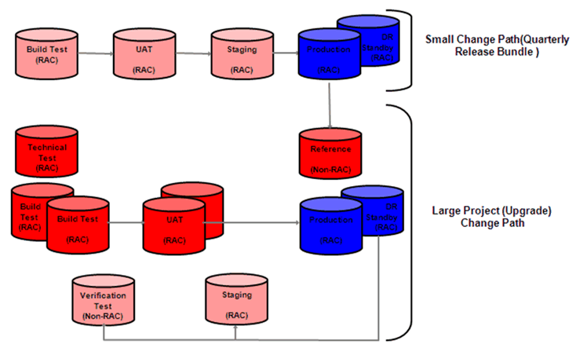

ORACLE SUPPORT SERVICES SUPPLEMENTAL TASK GUIDELINES FOR IT CHANGE MANAGEMENT
This component contains OUM supplemental task guidance for managing IT changes in an Oracle environment. The guidance complements and extends the baseline OUM guidance and should be used in conjunction with the guidelines in the OUM Task Overviews.
The first column of the following table provides a complete list of all tasks in this document for which "supplemental" guidelines are provided as well as a quick link to the "supplemental" task guideline in this document.
The second column provides a link to the OUM Task Overview.
The task guidelines in this document should be used to supplement the guidelines that appear in the OUM Task Overview. The guidance included in this component is focused on on Oracle's recommended approach and best practices for handling IT changes to an Oracle Eco System. Implementing the recommended technical solutions that consist of process, governance, product capabilities and knowledge ensures that standardized methods and procedures are used for efficient and prompt detection and handling of all changes.
Risk is a key input into Change Management, and also a key output. IT environments should be monitored for risks, and risks identified, should be analyzed and mitigated in a timely manner to ensure system health and security. To ensure risks due to changes to the IT are identified and mitigated, the following Risk Management tasks should address the recommended best practices contributing to IT Change Management, as outlined below. (See supplemental guidance for task TA.020, Define Technical Architecture Requirements and Strategy for a list of changes.)
Changes are typically analyzed for potential risks to the system. Changes are also proactively identified as described in the task, Monitor and Control Risk (RKM.050), and analyzed for risks. Each identified risk is evaluated and mitigated accordingly. To effectively manage changes, the Manage Risk task should address the following recommended best practices:
Analyze Changes - Once a change to the IT environment is logged, both the Business and Technical impact are analyzed. This helps manage the risk of the changes introduced. The change may not just impact that system, but also inter-connected systems. For example: An eCommerce application may make a call-out to a payment processing application like "VISA". Capturing associations and relationships between configuration items, services and systems allows for easy "what is affected, what is impacted" analysis. Oracle Enterprise Manager EM12C can be utilized to traverse the relationships from the bottom to the top of the tree to see if a problem will occur if changes are made to the element. It answers the question: What items are dependent on my element that would be affected should I do something to my element. For example, if I shut down a listener, what databases would be affected?
Risks need to be proactively monitored and controlled so that the IT system is healthy. The risks identified in the execution of this task are managed through execution of task RKM.040 (Manage Risk). Monitor and Control Risk should address the following best practices to effectively identify potential risks to the system and suggest appropriate changes to mitigate the risk:
Identify Changes to Monitor – There are several sources or inputs for change. Some common sources are listed below but your business requirements may include additional sources of change to monitor.
Patches and Security Updates: Patch Recommendations(changes) to remain stable, supportable and current, provided through Advisories in OEM/MOS.
Unauthorized Changes and System Performance: Automatic Real time Change Detection through healthchecks, risk analysis, monitoring tools.
Industry and/or Regulatory Requirements: Compliance to Industry/Government Standards.
Changes due to Business Requirements: IT changes as a result of business requirements like business setups, deployments, enabling new features, etc.
Create Policies to Monitor for Changes – Policies or rules are effective in managing configuration drift (through installation of patches, adding files and directories, changing settings and ports, editing its dependencies, and so forth) by continually auditing against prescribed configurations. Notification rules can be applied and corrective actions can be assigned for the defined policies. Oracle Enterprise Manager EM12C can be used to create policies/rules to evaluate the compliance of targets and systems as they relate to business best practices for configuration, security, and storage.
Like any other process, change management needs to be measured and continually improved upon. The success criteria are defined and then the improvement plan is created at a later point. Metrics identified in the improvement plan are measured to create the action plan for improvement. To ensure that the Change Management process is monitored and continually improved, the following Quality Management tasks should address the recommended best practices contributing to IT Change Management, as outlined below:
Identifying Success factors and metrics are key to drive improvement. In this task we will document a Quality Control and Reporting process to measure the efficiency and effectiveness of IT Change Management process. The Quality Control and Reporting Process should address the following best practices to effectively identify Key Performance Indicators and Success Factors to continually drive improvements in the IT Change Management Process:
Identify Success Criteria - The types of measures that need to be considered include:
Output Measures: Metrics that measure the outcome of the process or answer the question, Has it made a difference? An example is a reduction in the disruptions caused by unsuccessful changes.
Workload Measures: Metrics that measure total number of changes to the environment.
Process Measures: Metrics that measure performance, including perceptions and satisfaction levels with the overall process, e.g., speed, ease of use, etc.
The maturity level of the process will drive the types of measurements appropriate to be collected. In a new process, more process measures and workload measures are appropriate, i.e., Do changes have back-out plans? Have they been tested? What is the breakdown of the type of changes? As the process matures, business-outcome / output measures are more appropriate, such as reduction in impact of changes.
Create Continual Improvement Plan - As for any process, create a Continual Improvement Plan by measuring performance. Here are some sample metrics:
Measure Process:
1. % Rejected RFCs
2. Unauthorized Changes Detected
3. % of Change Requests (Business-Driven Need) Implemented On Time
4. Average Time to Make Changes
5. The Change Backlog
6. % Fewer Changes 'Backed Out' Because of Testing Failures
7. Changes Required by Previous Change Failures
8. % of Reports Produced on Schedule
Quick and Accurate Changes:
1. The Number of Urgent Changes
2. Urgent Changes Causing Incidents
3. Changes Implemented Without Being Tested
4. Urgent Changes Requiring Back-Out
5. % of Urgent or High Priority Changes Submitted Without Business Case to Justify Decision
Protect Service:
1. Amount of Both the Scheduled and Unscheduled Service Unavailability Caused by Changes
2. Changes Backed Out
3. Unsuccessful Changes
4. Changes Causing Incidents
5. Changes Impacting Core Service Time and SLA Service Hours
6. Changes Activated Outside Core Service Time and SLA Service Hours
7. Changes not Referred to a Change Advisory Board (CAB) or CAB Emergency Committee
8. Customer Satisfaction Survey (CSS) Feedback on Change
9. Failed Changes that do not have Recorded Back-Out Plan
10. Time to Implement a Change Freeze
Efficiency and Effectiveness Results:
1. % Efficiency Based on Number of RFCs Processed
2. The Accuracy of Change Estimates
3. The Average Cost of Handling a Change
4. Change Overtime due to Better Planning
5. The 'Cost' of Failed Changes
6. % of Changes Implemented On Time
7. % of Changes Implemented to Budget
8. Failed Changes
9. Backed Out Changes
Tools for Measuring Metrics:
Configure your existing Change Management tools for data collection. In Oracle's solution, the reporting mechanisms in Oracle Enterprise Manager and Siebel Help Desk can be used to collect performance data and display it in a dashboard to drive continual improvement.
Review Reports to Drive Improvement - The reports established in the implementation phase are recommended to be viewed on a regular basis to drive continuous improvement on the Change Management process.
How to view reports?
Change Identification and Deployment - The generic Enterprise Manager Reports Web site URL is http://hostname:port/em/public/reports. The URL for this site is automatically set when Enterprise Manager is installed. A link to this site can be found on the Create/Edit Report Definition Access page and the Reports tab.
Change Tracking - The Change tracking tool typically has reports to manage performance of changes such as number of emergency changes, failed changes which can be reviewed to drive improvement.
Configuration Management is a prerequisite for all the other IT processes. Configuration management is intrinsically linked to change management to ensure that a clear and complete "snapshot" of the environment is always available. For effective change management, assets are discovered and maintained in a configuration database (widely known as CMDB). From this point on, changes to and status of the configuration items are recorded in the configuration management database. To ensure effective rollout of changes on configurations, the following Configuration Management tasks should address the recommended best practices contributing to IT Change Management, as outlined below:
Change Management is part of the lifecycle of a configuration item. Understanding the Change Management Process is a key factor that facilitates developing a Configuration Management Strategy and Process.
Understand/Review Change Management Process – IT Change Management is the process of identifying, requesting, analyzing, approving, developing, implementing, and reviewing planned or unplanned changes to assets/configurations within the IT infrastructure. The Change Management Process begins with the identification of a Change Request and ends with the satisfactory implementation of the change and the communication of the result of that change to all interested parties. Change Management process consists of the following steps:
Identify/Detect a Change - Determine when a change needs to be made or when unauthorized changes have been made proactively before it negatively impacts the business.
Formally Request a Change - Document all change requests by creating a Request for Change (RFC).
Categorize and Prioritize the Change - Prioritize the change after assessing the urgency and the impact of the change on the infrastructure, end user productivity and budget.
Analyze and Justify the Change - Develop specific justification for the change by analyzing the impact on the infrastructure, business operations, and budget.Use this information to develop an extensive risk and impact analysis.
Approve and Schedule the Change - Review the risk/impact analysis to approve the change by routing the Request for Change (RFC) to technical and business approvers as appropriate. In the event of a major or significant change, ensure that committees such as Change Advisory Board (CAB) are involved for approval or rejection of the change.
Plan and Deploy the Change - Develop and deploy the change reviewing the specific implementation steps in a manner that will minimize impact on the infrastructure and end users.
Conduct Post-Implementation Review - Conduct a post-implementation review to ensure whether the change has achieved the desired goals. Post-implementation actions include deciding to accept, modify or back-out the change; contacting the end user to validate success; and finalizing the change documentation.
To effectively manage Oracle IT Assets, you need to identify the Tools which will help you with the process. This section provides supplemental guidance on identifying the Tools and Services for effective Configuration and Change Management of the Oracle infrastructure.
Identify Tools and Services - Change management tools and services that help you facilitate a successful implementation and stay ahead of constant change. With well defined processes and tools available to help plan, execute, and track changes you can take a proactive stance to manage changes in your Oracle environment.
Products and Tools: Tools can help reduce risk, minimize impact, avoid business disruption, and most importantly, increase your first-time success rate when preparing for and managing change in your infrastructure.
Below is a list of Change Management Products/Tools provided by Oracle:
Services: Oracle's complete portfolio of services covers the entire solution lifecycle and has been developed to assist customers in reducing total cost of ownership, lowering risk and improving business value.
Services related to Change Management are:
Changes identified as part of the Change Management process described in the task, Create and Execute Configuration Control Plan (CM.070) are released using specific release plans. This section provides best practices to strategize these releases using maintenance plans and promoting the changes through different environments (such as, DEV, TEST, PROD) and applying the changes to PROD environment.
Strategize Release of Changes - Changes can be either planned (proactive) or emergency (reactive). Plan roll out (release) of proactive changes ahead of time using pre-defined maintenance schedules and allocate regular maintenance windows for reactive (emergency) changes. The Change Manager in addition to business unit representatives and members of the Change Advisory Board (CAB) will establish maintenance windows in alignment with the business cycle in order to maintain system stability and business continuity. Changes should be frozen during peak business processing times, e.g. End of Month, End of Quarter, End of Year dependent on the business processing cycle.
Example - Steps to Create a Maintenance Plan
Define Change Freeze Periods
Fiscal Year(FY) June1 - May 31
First Quarter(1Q) - June 1 - Aug 31
Second Quarter(2Q) - September1 - November 30
Third Quarter(3Q) - December1-February 28
Fourth Quarter(4Q) - March1-May31
Hard freeze is the time period when quarterly closes are done (just before each quarter ends) when there are no changes permitted at all.
Soft Freeze is the time period when there are still some quarterly close activities taking place, but emergency changes are permitted. Major changes are not permitted during the Soft Freeze.
Quarterly Freeze Periods
Freeze
1QFY12
2QFY12
3QFY12
4QFY12
Hard Freeze
Aug18-Sep4
Nov15-Dec1
Feb14-Feb28
May14-Jun1
Soft Freeze
Sep5-Sep19
Dec2-Dec15
Mar1-Mar15
Jun2-Jun16
Create a Maintenance Plan - From the freeze periods, identify the available maintenance windows. Some examples of maintenance activities and their schedules follow:
Operations Quarterly Maintenance would have simple configuration/performance changes, etc.
Security patches are applied on a quarterly basis.
Other types of changes could be scheduled as it fits the organization.
Quarterly Maintenance:
Freeze
1QFY12
2QFY12
3QFY12
4QFY12
Hard Freeze
Jul 24
Oct 23
Jan22
Apr 22
Soft Freeze
Jul 31
Oct 30
Jan 29
Apr 29
Implement Promotion of Changes – One of the key steps in Release Management is progression of changes through various environments. Even though this depends on each organization, below are a couple of examples to promote changes:

The first example shows a simple Change path which could be used for small-to-medium project changes(Example - Quarterly Release Bundle).
The second example, shows how the promotion of changes might look like for larger projects (like Upgrades).The Technical Test environment is a one-off test environment and has no designated change flow to other test environments. It is used for initial upgrade testing and performance testing. A copy of production is created just before go-live as a reference for issues which may arise. Upgrade changes will be introduced into normal production support path via refresh after project go-live.
Log and Manage Changes – Part of the Software Release Management Plan and any changes released will consist of the following steps:
Initiate Change: A request for change (RFC) is initiated by the "Change Initiator" and here are some examples of how changes can be initiated and logged:
1. Changed from an existing incident, where the solution can be to apply a patch, make a configuration change, etc. In this case the incident can initiate a Change Request using the ticketing system. Here is an example of doing it using Siebel Help Desk.
2. For bigger changes (like an Upgrade roll-out), this is typically done by creating a Project in the ticketing system . Here is an example of doing this using Siebel Help Desk. You can also use My Oracle Support Projects to collaborate with Oracle Support on roll-out of major changes like an Upgrade.
3. Changes can also be triggered by monitoring tools (like OEM) which can open a change ticket in the ticketing system (like Siebel) based on the criteria set using connectors as described in the Plan phase. Example - If there is a security alert raised as a result of non-compliance to the policies set in OEM, a change ticket can be initiated from OEM using the connector to populate the change record with the configuration information.
Classify Change: The classification of a change aims at providing a control factor for the change, which will be used for factual decision making with respect to change scheduling. Here is an example of how this can be done.
Conduct Impact Analysis and Assess Risk: Once a change is logged, both the Business and Technical impact are analyzed. The change may not just impact that system, but also inter-connected systems. For example: An eCommerce application may make a call-out to a payment processing application like "VISA". Capture associations and relationships between configuration items, services and systems allows for easy "what is affected, what is impacted" analysis. Here is an example of impact analysis on an EBS environment for rolling out patches:
1. Apply the patch on a test environment that is a very recent clone or copy of your Production environment.
2. Use Patch Wizard to assess technical impact (what files have been changed, etc.).
3. Use Patch Wizard to assess Impact on Customizations based on the "Flagged files."
4. The reading of the README file that comes bundled with the patch to learn what is new, what has changed, etc, especially for Release Update Packs.
5. Oracle Communities has some forums for patch reviews where you can get information from other customers about patches they have applied and their results.
6. In reactive or emergency patching situations where testing is not feasible, the patch may be applied on your Production system by using the AutoPatch (adpatch) test mode argument (apply=no).
Approve and Schedule Change – Approval of a change is driven by its category which would have been defined when planning the architecture. Based on the Approval criteria setup during the Implement phase (CAB,ECAB, etc.), changes are authorized and scheduled using the Change Management system (Siebel Help Desk in our case). Here is an example of how this can be done.
Promote and Release Changes – As part of Release Management, once the changes are logged, they are promoted through various environments and finally deployed in the Production system. Once they are deployed, changes are validated to ensure they have not introduced any regression and satisfy the requirement of implementing the change.
Deploy Change - Depending on the type of changes, simple changes are easy to deploy and can be done by instrumented change models, whereas major changes go through the entire change lifecycle of Development, Test and Production. Some examples of promotion of changes were covered in the "Implement phase".
Below are some examples of how changes can be deployed using Oracle Solution:
1. Product Upgrades - Use the Upgrade Advisors to guide you through an upgrade lifecycle between specific versions for a product or suite.
2. Patches - Use the Patch Advisors to guide you through deployment of a patch.
3. Changes in Application code and schema changes using OEM:
Automatically create new versions for new sets of planned changes.
Validate planned changes to identify conflicts or previous changes.
Preview and edit validated changes before applying.
Generate SQL script of final set of validated changes.
Apply validated planned changes.
Release and Validate Change - Once the changes have been tested and gotten the approval to be released, based on the maintenance schedule developed during the strategy phase, changes should be packaged and released.
Some of the steps to be taken into consideration are:
1. GO-NOGO decision has been made
2. All the approvals are in place - should be tracked using the ticketing system (Siebel Help Desk)
3. Change is documented and communicated including the Projected Service Outage if there is any outage during the change release - through the ticketing system(Siebel Help Desk)
4. Transfer information to Operations and Support - create technical documents and training information as required. Oracle's User Productivity Kit (UPK) can be used to create training content.
5. Stabilize in the Production environment - Observe using System Management tool like OEM
6. Validate both from technical and business standpoint whether the change was successful and any lessons learned to drive improvements - can be done using feedbacks, technical comparison (new and old environments), Business process monitoring, etc.
The Configuration Control Plan controls the changes to configurations to the IT infrastructure. It is important to both detect risks to the environment to proactively prompt the changes and also detect any unauthorized changes to the configuration. The detected changes are rolled out using release plans described in the task, Create and Execute Software Release Management Plan (CM.050). This section provides best practices to both identify health/patch recommendations and also unauthorized risk to IT infrastructure:
Detect Changes - Assets and configurations are required to be evaluated related to business best practices for configuration, security and storage. There needs to be controls in place to ensure that the configurations are maintained properly. There are various sources of changes. Below are some examples of identifying the need to change or detect unauthorized changes. Once the changes are identified, using the Change Management Solution (example - OEM), the Connectors in OEM can be used to log and manage tickets in the ticketing system (example - Siebel Help Desk).
Changes as a result of Configuration Drift: A drift in configuration can be identified using Oracle Enterprise Manager (OEM) 12C across the stack, across system lifecycles, Baseline & Gold Std and 1 to 1, 1 to Many scenarios. Save the comparisons with versions so that it can be compared across various timelines. Automated notifications could also be setup. Example using OEM and Application Management Packs:
Find if all the E-Biz Suite configurations in the data center are following a particular standard.
Find the drift between Development, Stage and Production lifecycles.
Detect if peers are indeed similarly configured.
Reconcile differences, if any.
Revert back to an older snapshot upon deviation.
Changes as a Result of Health and Patch Recommendations: IT infrastructure is required to be monitored for system health. The recommendations out of the monitored system can be implemented using the Change Management Solution.
Example: The critical Patch Advisory in OEM using the My Oracle Support integration provides:
1. Vulnerability Analysis on the Security Patches (CPUs)
2. Comprehensive Analysis of Applicable Patches across Products, Versions, and Platforms
3. Supports both Online and Offline Modes
4. Automated Patching Process
5. Advisory and Vulnerability Reports
To effectively deploy Change Management processes within an organization, there are infrastructure requirements to ensure changes are efficiently handled. Change Management tools identified in CM.020 (Obtain Configuration Management Tools) need to be installed and maintained as part of the IT infrastructure being managed. To ensure we have a the necessary infrastructure to support roll-out of changes, the following Infrastructure Management tasks should address the recommended best practices contributing to IT Change Management, as outlined below:
Create Environments to Promote Change - Changes are promoted from the Development environment all the way to Production where it is available for the users. While we understand that the types of environments vary across organization, below is a sample of what environments are required to roll out changes.
Environment
Description
Usage
Development
Initial Development Environment - IT Only
Used for Ongoing Development
Build Test
First Integrated Environment
Business Process Owners Involved
Unit Test
Full Test Environment
All Users along with Automated Tests
Stage
Final Test before Production
Ensure all Regression Tests (RTs) and Critical Flows work.
PROD
Production
Production
Setup Support Framework - My Oracle Support is Oracle’s Support framework. The following are the recommended steps in your infrastructure to integrate Support with your System Management tools (such as EM):
If you had chosen to deploy OCM without the harvester, download and install collector in each ORACLE HOME. If there are lot of environments, the manual installation of Oracle Configuration Manager in these environments can be tedious and time consuming. Mass Deployment can facilitate the deployment of Oracle Configuration Manager in these environments, as well as update and configure various systems from a single location.
If you had chosen to deploy using OEM Harvester, it is sufficient you install one OCM collector for OMS instance in Connected mode. Then setup a Harvester job to gather and upload Configuration information to Oracle.
3. Enable systems not having internet access using Oracle Support Hub utility.
4. Validate OCM agents are running.
5. Schedule Upload of Configuration Data - OCM has a scheduler process that dictates when collections occur. This can be configured using the command
$ORACLE_HOME/ccr/bin/emCCR set collection_interval.
6. Validate OCM data uploaded to MOS is current by checking the timestamp of the configuration.
7. Subscribe to Communities for sharing information, posting questions and answers, and providing suggestions about Oracle products, services, and related technologies.
Setup Change Detection and Deployment Framework - Oracle Enterprise Manager(OEM) is Oracle’s solution for Change Detection and Deployment. The following information will enable you to setup the infrastructure required to manage your Oracle Environment:
Setup Change Approval and Tracking Framework - Changes need to be managed and in order to automate this process, there are infrastructure requirements to install and setup the tools which will provide these capabilities. Even though Oracle offers quite a number of solutions, we have taken Siebel Help Desk as an example:
Implement Reporting Framework - Reports are used to present a view of enterprise monitoring information for business intelligence purposes, but can also serve an administrative role by monitoring the performance of a process.
Create Reports for Change Identification and Deployment - Below is a sample of how a reporting framework could be setup to identify and deploy changes using OEM:
Information Publisher, Enterprise Manager's powerful reporting framework, makes information about your managed environment available to audiences across your enterprise. Information Publisher reports present an intuitive interface to critical decision-making information stored in the Management Repository while ensuring the security of this information by taking advantage of Enterprise Manager's security and access control.
Review Out of Box Reports - Information Publisher comes with a comprehensive library of predefined report definitions, allowing you to generate fully formatted HTML reports presenting critical operations and business information without any additional configuration or setup.
Create Custom Reports - Although the predefined report definitions that come with Information Publisher cover the most common reporting needs, you may want to create specialized reports. To create custom reports:
1. Choose whether to modify an existing report definition or start from scratch. If an existing report definition closely matches your needs, it is easy to customize it by using Create Like function.
2. Specify name, category, and sub-category. Grid Control provides default categories and sub-categories that are used for out-of-box reports. However, you can categorize custom reports in any way you like.
3. Specify any time-period and/or target parameters. The report viewer will be prompted for these parameters while viewing the report.
4. Add reporting elements. Reporting elements are pre-defined content building blocks, that allow you to add a variety of information to your report. Some examples of reporting elements are charts, tables, and images.
5. Customize the report layout. Once you have assembled the reporting elements, you can customize the layout of the report.
Schedule Reports - Enterprise manager allows you to view reports interactively and/or schedule generation of reports on a flexible schedule. For example, you might want to generate an "Inventory Snapshot" report of all of the servers in your environment every day at midnight.
Create Reports for Change Tracking - The lifecycle of change records and maintained in the ticketing system. Below are guidelines for setting this up for one of Oracle's Solution - Siebel Help Desk:
IT Change Management is part of the Organization’s wider Change Management process and should blend with the organizational strategy towards managing changes. People, Process and Technology are three key parts of IT Management. In this section you will get Best Practices related to organizational structure (People part) to support IT Change Management.
Define Governance, Roles and Responsibility - Complexity of today's business and IT environments makes efficient and effective change management simultaneously more important and more difficult to achieve. For effective Change Management, it is very important to define proper Roles, Responsibilities, committees and approval hierarchy within an organization to ensure changes are coordinated and adequately governed.
Setup Roles - While this depends on each organization, here are some suggested roles to drive effective Change Management:
Global Business Owner - Person responsible for the specific Business flow (for example, Order to Cash)
Global IT Solution Owner - Person responsible for creating the solution to support the business flow (tools, technologies, applications to support the business flow). Global Business Owner and Global IT Solution Owner work very closely throughout the Change Management Lifecycle.
Change Manager - Person responsible for managing the activities of the change management process for the IT organization. This individual focuses on the process as a whole more than on any individual change. The Change Manager is ultimately responsible for the successful implementation of any change to the IT environment.
Change Initiator - Person responsible for originating changes by submitting a well defined change request(RFC). Change initiators could be users, suppliers or IT staff - depending on the nature of the proposed change.
Setup Committees - Within an organization there can be certain groups, comprised of cross functional representatives, who meet on a regularly basis to deliver on their specific charters. Delegates are identified to represent each of their respective areas on various committees. Here is an example of typical committees that can be setup appropriate to your requirement:
Change Advisory Board (CAB) - The CAB is a cross-functional group set up to evaluate change requests for business need, priority, cost/benefit, and potential impacts to other systems or processes. Typically the CAB will make recommendations for implementation, further analysis, deferment, or cancellation. The CAB meets on a regular basis (depending on the size of the organization and dynamic nature of changes) to discuss changes which are pending for approval.
CAB Emergency Committee (CAB/EC) - This is a subset of the CAB that deals only with emergency changes. It is established to be able to meet on short notice to authorize or reject changes with emergency priority.
Compliance Forum - The Compliance Forum coordinates across the organization to drive Compliance. Meets as required (usually monthly). Attended by representatives from each Line of Business(LOB).
Security Committee - The group's primary focus is to ensure globally consistent practices among the functional LOB support teams while facilitating and implementing security processes across all environments. They collaborate with the Security team in reviewing, approving and proposing security and access guidelines and processes.
For effective Change Management, technical requirements should be defined and planned so that the solution will cater the needs of the organization. As Change Management consists of selection of different tools and services based on the business requirements as described in CM.020 (Obtain Configuration Management Tools) , this section will provide Best Practices on defining technical requirements for implementing Change Management Solution in an organization.
Understand Best Practices - While it is understood that each organization have different requirements, following are some of the Best Practices to consider when defining the Architecture for Change Management:
1. Plan changes during scheduled maintenance windows and minimize ad hoc/emergency changes.
2. Facilitate the introduction of all types of change via simple, clear and effective procedures and tools across the various environments.
3. Assess all changes for feasibility (technology and cost) and business impact (risk).
4. Perform due diligence appropriate to the Change category and type:
Reduce the breadth of approval on minor or standard changes wherever possible.
Increase the rigor and approval level for more significant changes.
5. Acquire Project management support and co-ordination.
6. Have Zero tolerance for unauthorized change.
7. Prioritize change by type: e.g. innovative versus preventive, versus detective, versus corrective.
8. Segregate duties, e.g. manager vs. approver vs. tester.
9. Establish a single focal point for managing change.
10. Enforce Change windows, establish authorization procedure for exceptions
11. Avoid change approvals without a tested back-out plan.
Define Structure for Change Management - An important aspect of defining the architecture for Change Management Solution is to document the business requirements for change such as the change drivers, types of changes need to manage, how the changes will be promoted and having a clear and concise communication plan. While this depends a lot on the specific organization and business, below are some guidelines:
Define Change Drivers - In order to build a strategy for change, it is important to identify where changes come from or in other words what are the drivers for changes. Most of the changes are recurring except Implementation and Upgrade changes which are not very frequent.
Business Driven - Changes which initiate from the Business.
Implementation - When you want to implement a new Business process(Example - Implementing Order to Cash Business flow in your current installation). This would involve installation, configuration, testing, customization, roll out, etc.
Process improvement - Customization or setup to satisfy business requirements.
Optimization changes are made periodically when there are performance issues impacting business.
Vendor or IT Initiated - Changes which are IT or vendor driven to maintain supportability and currency:
Patch - regular maintenance activities to resolve issues, stay compliant with security, supportability, etc.
Upgrade - When you are upgrading from one major release to another(Example - Upgrading from Database 10G to 11G).
Configuration changes are made by IT periodically as part of maintenance.
Define Types of Change Requests - Different types of change requests can be defined based on the impact and in terms of how a change should be handled. Here are some examples:
Emergency - Having an immediate, detrimental effect on business operations. Streamlined approval process, may or may not go through full testing based on risk analysis.
Urgent - High impact but able to be scheduled in a maintenance window.
Normal - Scheduled in a standard maintenance window.
Standard - Low impact, repetitive change that is essentially pre-approved. Standard Change template should be defined. Depending on defined policy may not need CAB approval.
Define Promotion of Changes - Once changes are created, they are required to be properly tested and promoted to a Production environment. Here are some recommendations of environments:
Development Environment - This is the environment where the changes are developed.
Test Environment - Once the changes are developed, it is promoted to a Test environment where the changes are tested for its functionality. Test environment needs to match the Production environment as close as possible.
User Acceptance (UAT)Environment - Once the changes are individually tested, they are promoted to a UAT environment where the changes are regression and performance tested. UAT environment should be a very recent copy of Production.
Stage Environment - This is where the changes are finally tested before it gets released in the Production environment. Ensure all regression tests (RTs) and critical flows work in this environment.
Production Environment - Once the changes are thoroughly tested, it is promoted into the Production environment.
Create Communication Plan - The Communication Plan ensures that all stakeholders are equally informed of how, when, and why communication will happen. Communication is often a very effective way to solve problems, deal with risks, and ensure that tasks are completed on time. Successful communication plans will identify stakeholders, the information to be communicated, and how this information will be communicated.
Identify Technical Requirements for Change Management Solution - For effective Change Management, define technical requirements to facilitate identification, tracking, deploying and measuring changes. Taking an example, for managing changes in a database environment using Oracle solution, the following are the key requirements:
1. My Oracle Support for Integrated Support
2. Oracle Enterprise Manager Grid (EM12C) provides the management framework and connection to ticketing system
3. OEM 12C Lifecycle Management pack
4. A ticketing tool – for example - Siebel Help Desk for change management which connects into OEM for tracking and managing changes
If this was an E Business application environment, the following are the additional recommendations:
Change Management is essentially a workflow where changes go through a lifecycle from logging all the way to the change being released, tested and closed. This section provides best practices to operationalize Change Management procedures using workflows, templates and documentation based on the business requirement:
Define Workflows and Templates - It is important to identify how a change will actually be handled. You need to define the process and procedures for handling change and these should be incorporated into the tools which will handle part of the process. Below are some guidelines specific to IT Change Management:
Define Change Management Workflow - Define a process flow for your change. Products providing tracking capabilities like Siebel Help Desk will typically have a workflow built in the system and will allow you to modify those to suit your requirements. This process flow will also be integrated with the Approval mechanism to route the change request accordingly. There can be several workflows based on the type of change request (standard, emergency, urgent).
Define Request for Change Templates - Define a standard template to request for change. These are templates for the requestor to submit when a change needs to be rolled out. The organization can streamline the request by using pre-populated fields and drop-down lists usually provided by the ticketing system (such as Siebel Help Desk) for information such as the type of change, the service affected by the change, and the applicable technology.
Plan Communications (Projected Service Outage)
Communicate changes in advance for the benefit of customers and other stakeholders. One of the key aspects of communicating changes is the Projected Service Outage (PSO) which is used to communicate changes in availability due to scheduled maintenance.
Create Change Models - Create a repeatable way of dealing with a particular Category of Change which defines specific pre-defined steps that will be followed. Change Models may be very simple, with no requirement for approval (e.g. Password Reset) or may be very complex with many steps that require approval (e.g. major software Release). These models are usually input to the change management support tools in use(such as OEM and Siebel Help Desk) and the tools then automate the handling, management, reporting, and escalation of the process.
Assets and configurations are required to be evaluated related to business best practices for configuration, security and storage. Compliance standards and audit requirements are defined based on the requirements of the organization. Auditing against compliance standards are operational tasks which should be carried out at a pre-defined intervals to ensure the environment meets the standards.
Comply with IT Policies - Comply with Industry IT Policies by automating real-time IT configuration change management through comprehensive, continuous detection, validation and reporting of authorized and unauthorized configuration change. OEM 12C Lifecycle Management Pack includes a feature set that provides capabilities to comply with Industry IT Policies like SOX,PCI, etc.
Compliance Management provides the ability to evaluate the compliance of targets and systems as they relate to business best practices for configuration, security, and storage. This will enable organizations to provide the governance to the specific Industry standard they want to comply against.
Oracle Enterprise Manager 12C (OEM) provides capabilities to create Multiple levels of hierarchies to manage compliance of configuration:
Compliance Framework - Conceptual “folders” that map configuration standards to real-world structure of compliance frameworks (PCI, COBIT, HIPAA, CIS, etc)
Compliance Standard - Collection of rules that gets associated to multiple targets
Compliance Rule - Checks/Tests that are performed against specific target types
There is a rich set of out-of-box rules mapped to out-of-box standards and frameworks such as for Exadata configuration, CIS, PCI. To glue all the different compliance standards for particular target types together, we use the compliance framework. This follows the industry standard model to support real-world structures, frameworks like PCI. The frameworks can help the administrators to create rules and standards; the compliance and security officers and auditors can take advantage of the standards and frameworks to manage compliance reports.
For more information on Creating a Compliance Framework, refer to EM Documentation.